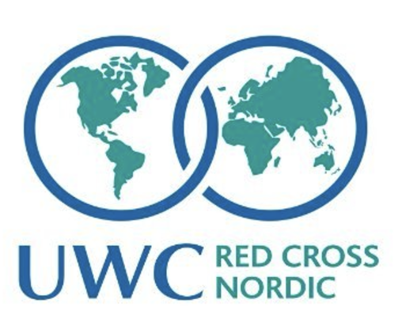
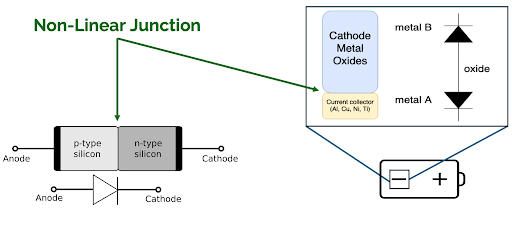
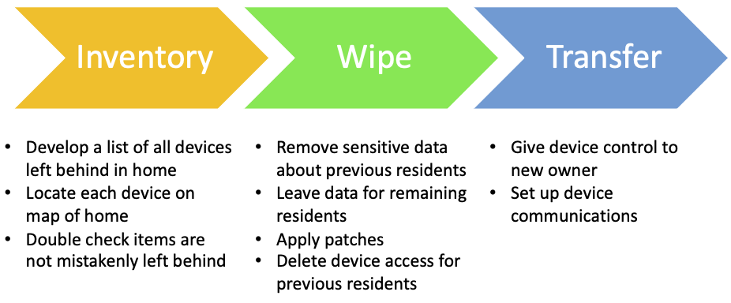
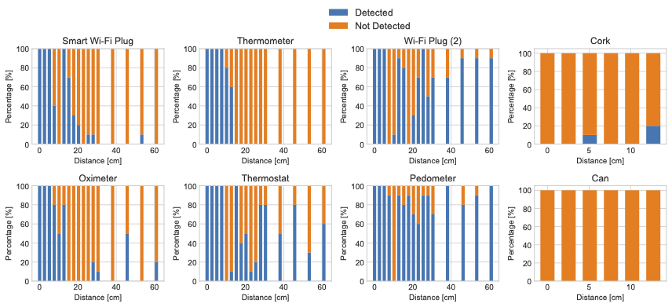
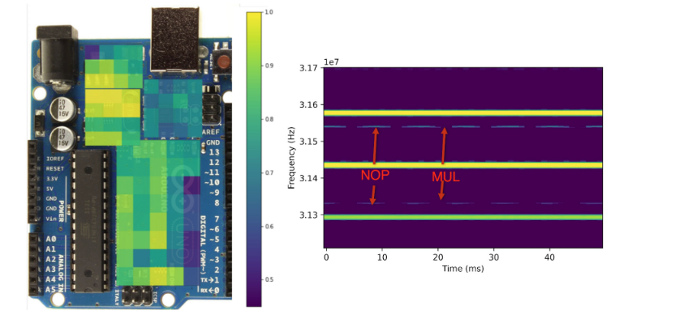

EDUCATION
-
Ph.D in Computer Science
Hanover, New Hampshire
- A member of research team at SPLICE Research
- [In application] Harmonic radar for battery detection. U.S.
Provisional Patent Application, United States Patent and Trademark Office.
-
B.S in Computer Science and Physics
Gainesville, Florida
- Graduted Cum Laude
- Selected for Honors Program
- Member of the Florida Institute of Cybersecurity
-

PUBLICATIONS
-
Cesar Arguello, Beatrice Perez, Timothy J. Pierson, and David Kotz
Detecting Battery Cells with Harmonic Radar. Proceedings of the ACM Conference on Security and Privacy in Wireless and Mobile Networks (WiSec), pages 231–236. ACM, May 2024.

Paper Slides
-
Timothy J. Pierson, Cesar Arguello, Beatrice Perez, Wondimu Zegeye, Kevin
Kornegay, Carl Gunter, and David Kotz
We need a “building inspector for IoT” when smart homes are sold. IEEE Security & Privacy. IEEE, April 2024.

Paper
-
Beatrice Perez, Cesar Arguello, Timothy J. Pierson, Gregory Mazzaro, and David
Kotz
Evaluating the practical range of harmonic radar to detect smart electronics. Proceedings of the IEEE Military Communications Conference (MILCOM), pages 528–535. IEEE, October 2023.

Paper
-
Cesar Arguello, Hunter Searle, Sara Rampazzi, Kevin Butler
[Poster]: A practical methodology for ML-Based EM Side Channel Disassemblers. Proceedings of the 2022 Poster Session of the 7th IEEE European Symposium on Security and Privacy, pages 7-9. IEE, June 2022.

Poster
SELECTED NEWS
-
- Passed my RPE. Paper Presented: Ghostbuster: Detecting the Presence of Hidden Eavesdroppers. [Slides]
-
- Participated as student of the 2024 CyberTruck Challenge
-
- Presented Detecting Battery Cells with Harmonic Radar at the 17th ACM Conference on Security and Privacy in Wireless and Mobile Networks (WiSec) in Seoul, South Korea.